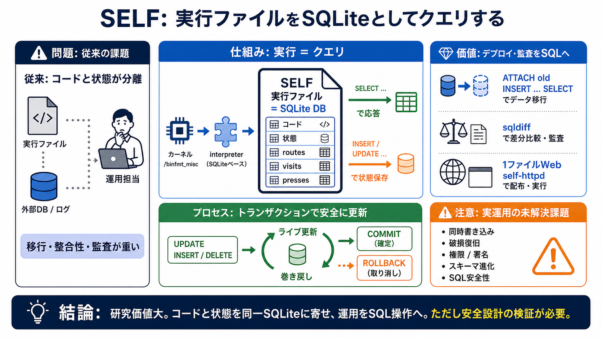

Your executable is a SQLite database
`self-exec` You can additionally use a Linux mechanism called binfmt\_misc to teach the kernel to execute that any time…

`self-exec` You can additionally use a Linux mechanism called binfmt\_misc to teach the kernel to execute that any time…
Aug 19, 2026 [...] ## Featured Posts Open August 2026 KEV Surge: Critical Patch Priority for CVE-2026-65400, CVE-2026-5…
SQLite is a self-contained, serverless database engine that runs inside your application and stores everything in a sing…
| sqlite-devel-3.26.0-16.el8\_6.4.i686.rpm | SHA-256: 53526c29d8fb544b3b5251cdbe127e5b92ac49810d7f01e35dce898e3d698d7d |…
SQLite is very carefully tested prior to every release and has a reputation for being very reliable. Most of the SQLite …